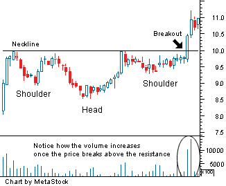

A chart pattern used in technical analysis to predict the reversal of a current downtrend. This pattern is identified when the price action of a security meets the following characteristics:
1. The price falls to a trough and then rises. 2. The price falls below the former trough and then rises again. 3. Finally, the price falls again, but not as far as the second trough.
Once the final trough is made, the price heads upward toward the resistance found near the top of the previous troughs. Investors typically enter into a long position when the price rises above the resistance of the neckline. The first and third trough are considered shoulders, and the second peak forms the head.
This pattern is also known as a "reverse head and shoulders" or a "head and shoulders bottom".
As you can see from the chart above, a move above the resistance, also known as the neckline, is used as a signal of a sharp move higher. Many traders will watch for a large spike in volume to confirm the validity of the breakout. This pattern is the opposite of the popular head and shoulders pattern, but is used to predict shifts in a downtrend rather than an uptrend.
{kind=link}